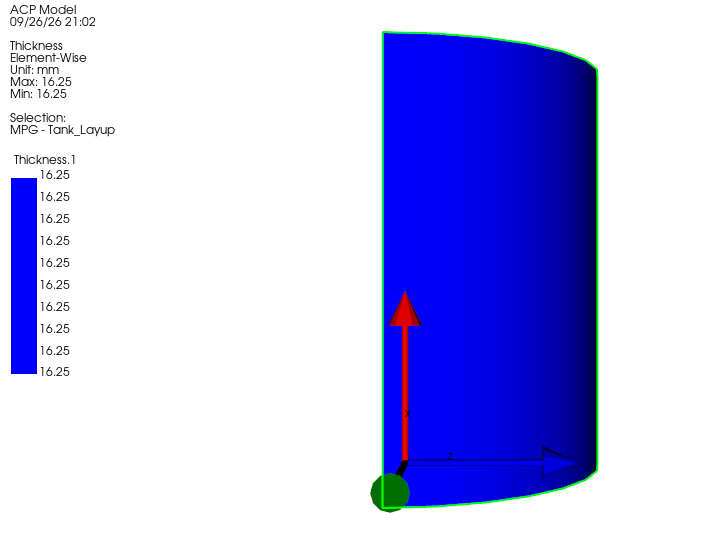
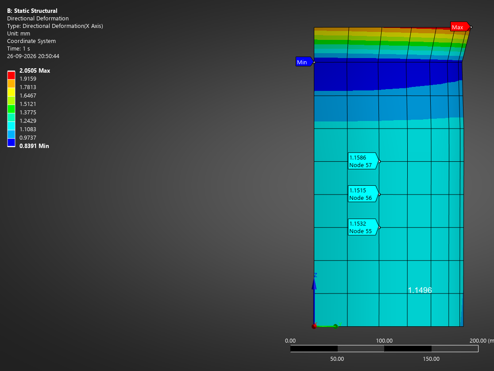
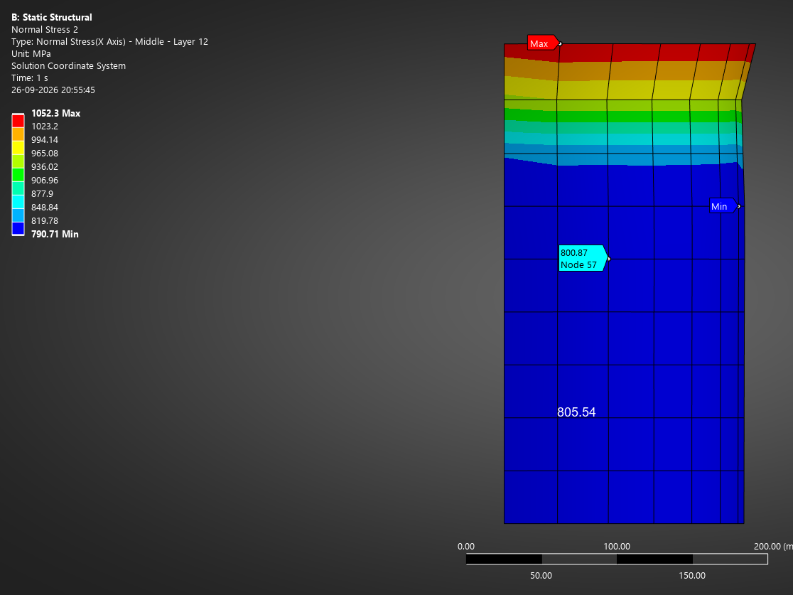
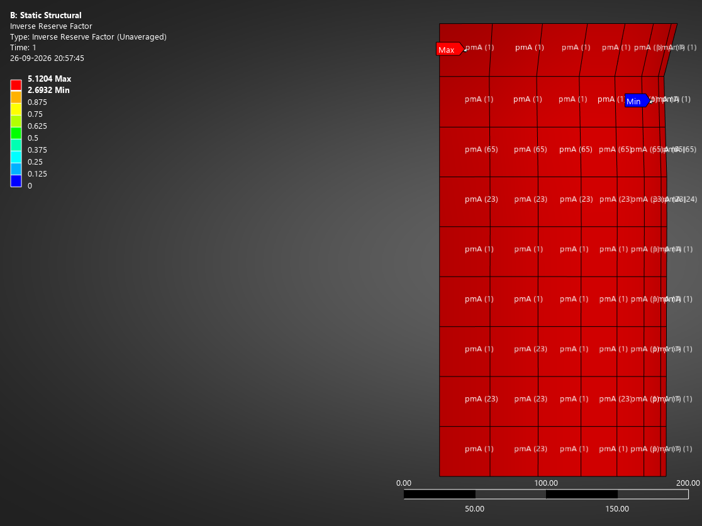
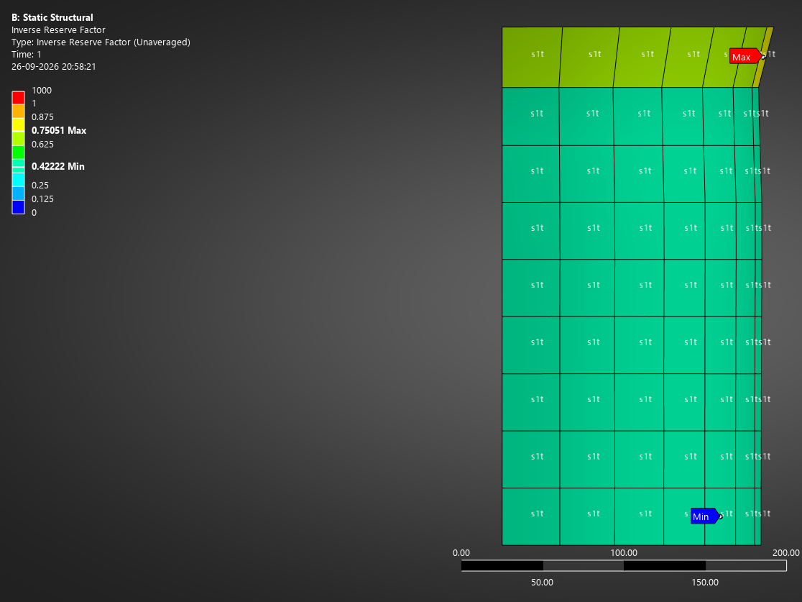

The cylinder of a type 4 hydrogen tank (plastic liner, carbon fibre wall) at 700 bar working pressure. The questions: how thick must the wound wall be, which layer cracks first, and does the tank still meet the burst requirement?
| Quantity | Hand | Ansys | Deviation |
|---|---|---|---|
| Radial growth | 1.15 mm | 1.153 mm | +0.3 % |
| Fibre stress, hoop layers | 950 MPa | 943.5 MPa | −0.7 % |
| Fibre stress, helical layers | 800 MPa | 800.9 MPa | +0.1 % |
| Stress across the fibres, innermost layer | 81 MPa | 80.8 MPa | −0.3 % |
| Inverse reserve factor, all criteria | 2.8 | 2.7–3.0 | Puck mode A: matrix cracking |
| Inverse reserve factor, fibres only | 0.43 | 0.42–0.46 | fibre tension |
| Burst pressure (fibre failure) | ≥ 157.5 MPa | ≈ 163 MPa | meets 2.25 × working pressure |





Hand calculation
Wall forces per unit length of a closed cylinder (R = 150 mm), sized at the burst pressure pb = 2.25 × 70 = 157.5 MPa:
Netting theory (fibres carry everything, resin nothing), fibre strength X = 2,231 MPa, helical angle α = 15°:
Rounded up to 0.25 mm plies: 24 helical (6.0 mm) + 41 hoop (10.25 mm) = 16.25 mm. Laminate theory at the working pressure of 70 MPa then gives the strains and ply stresses:
Stress across the fibres, which decides matrix cracking (strength 29 MPa). A ±15° layer is pulled across its fibres almost in the hoop direction, where the strain is largest:
Fibre check: 950/2,231 ≈ 0.43, so fibre failure is expected at about 70/0.43 ≈ 163 MPa.
Model and discussion
- A quarter of the cylinder (R 150 mm, 300 mm long) as layered shells. The 0° reference runs along the axis and the layer normals point outward, so layer 1 sits against the liner.
- Symmetry built by hand on the three cut edges: on each, the movement through the mirror plane and the two tilts out of it are fixed. The closed dome is replaced by its axial pull, 70 × π × 150² / 4 = 1.24 MN, on the free end.
- Every result in the middle of the tank agrees with laminate theory within 1 %: the wall works as a membrane there, which is what the hand calculation assumes.
- Where the model corrected me: my first check looked at the hoop layers (IRF 2.5). Ansys showed that the helical layers crack first. Redoing the hand check for the helical layers gave 81 MPa and IRF 2.8, matching Ansys. The innermost layer is worst because the same growth over a smaller radius means more strain.
- Error caught by the hand check: the first run gave 64 mm of radial growth instead of 1.15 mm. Checking the edge centroids showed two symmetry supports on swapped edges, which stopped the ring from expanding and forced it to bend. After the fix the result matched the prediction.
- Near the loaded end the stresses rise: the dome is missing and the end force acts 8 mm off the middle of the wall. The disturbance fades within about √(R·t) ≈ 50 mm, so all values are read in the middle.
- Engineering meaning: the resin cracks at working pressure while the fibres use only 43 % of their strength. This is why a type 4 tank needs its gas-tight liner, and why the fibres, not the resin, set the burst pressure.
- Limits: coarse mesh (about 30 mm elements), no dome, linear first-failure estimate of burst. Next steps are a mesh convergence study and modelling the cylinder–dome junction, a known hotspot in real tanks.
The model matched laminate theory within 1 %, and where it disagreed with my first check, the check had looked at the wrong layer.